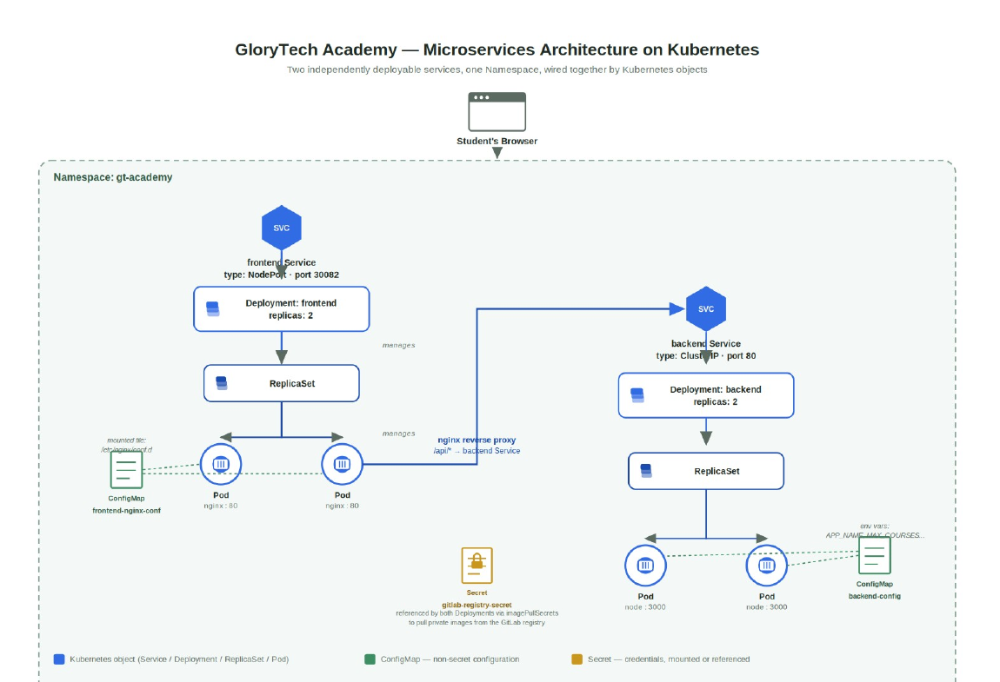
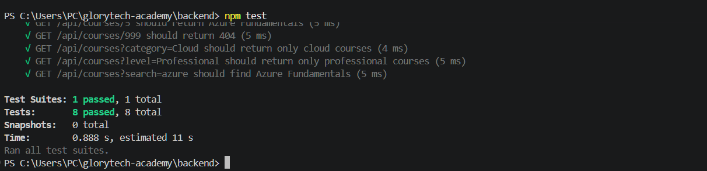
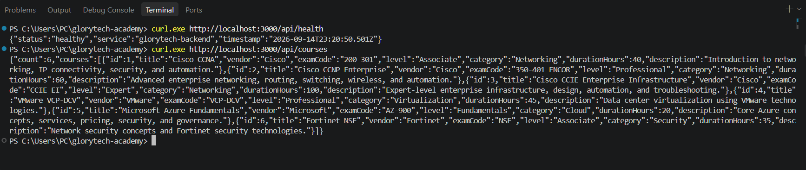
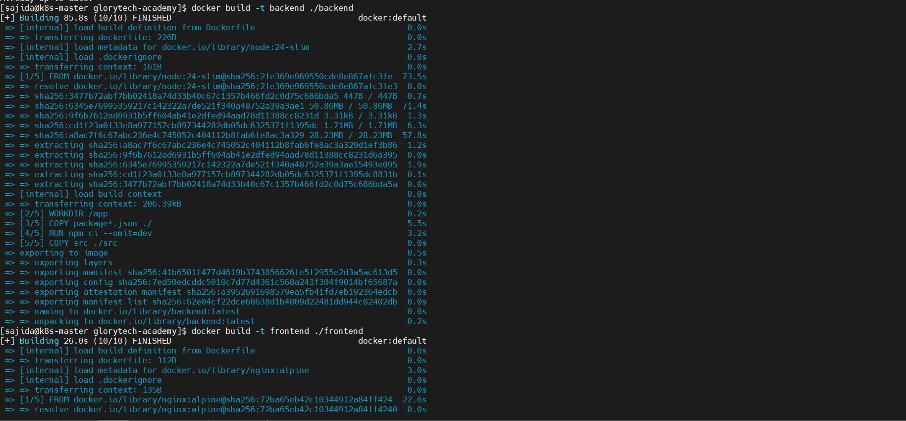
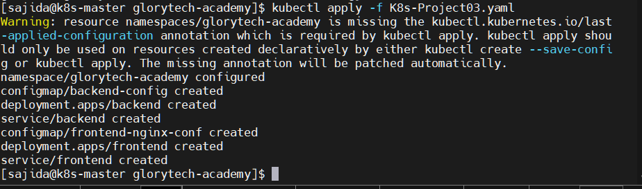
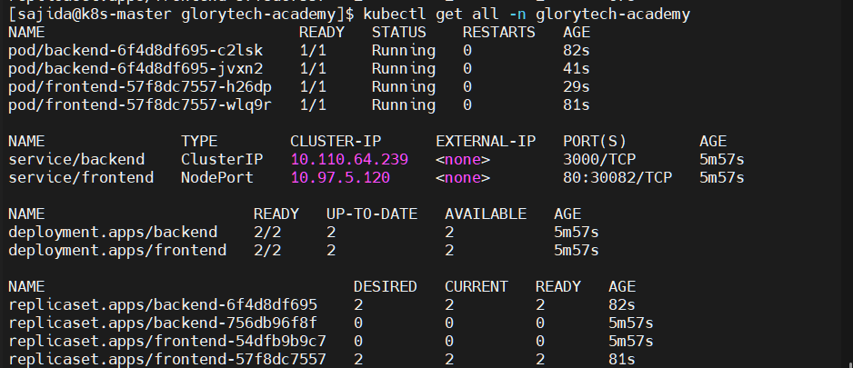
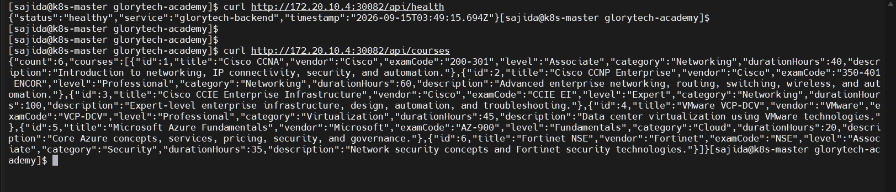
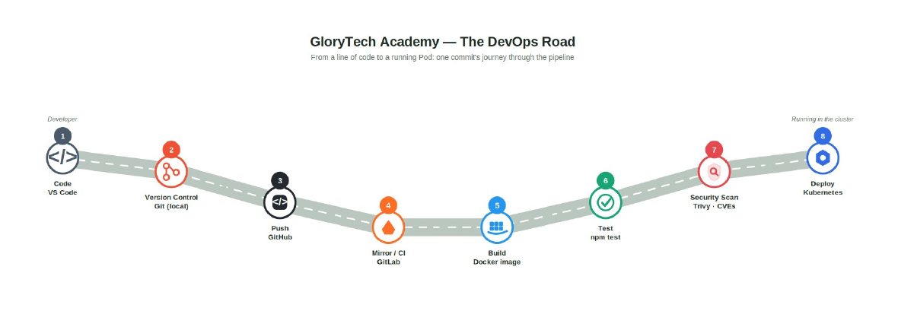
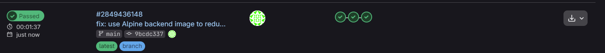

Backend
Node.js + Express REST API
GET /api/courses serves six certification courses. GET /api/health provides a health endpoint used during local, container and cluster verification.
An end-to-end DevOps project that takes a two-service certification platform from local development to Docker images, Kubernetes orchestration, private registry access, automated testing and Trivy security scanning through GitLab CI/CD.
GloryTech Academy is a two-service training platform: an Nginx frontend and a Node.js/Express backend REST API. The goal was not only to make both services work, but to connect application code, containers, registry access, Kubernetes networking, CI/CD and security validation into one working system.

The backend exposes course data through a REST API and includes health checks for later container and Kubernetes verification. Filtering logic supports vendor, category, level and search parameters, while automated tests verify successful responses, filtering behaviour and 404 handling.
Testing the application first kept later Docker and Kubernetes problems separate from application-level bugs.
GET /api/courses serves six certification courses. GET /api/health provides a health endpoint used during local, container and cluster verification.
Eight backend tests cover the full course list, individual course lookup, query filters, search behaviour, the health endpoint and not-found responses.
GET /api/courses GET /api/courses/:id GET /api/courses?vendor=Cisco GET /api/courses?category=Cloud GET /api/courses?level=Professional GET /api/courses?search=azure GET /api/health


Each service receives its own image and runtime. The backend is packaged as a Node.js application on port 3000, while the frontend uses Nginx on port 80. Both images were built and run locally before Kubernetes was introduced, keeping container behaviour independently testable.
Node.js application runtime Install production dependencies Copy backend source Expose application port Start with npm
Nginx runtime Copy HTML, CSS and JavaScript Install Nginx configuration Expose port 80

The Kubernetes manifest creates a dedicated namespace and reproduces the two-service architecture with separate Deployments and Services. Both Deployments run two replicas, making the Deployment → ReplicaSet → Pod relationship visible. The backend remains internal through a ClusterIP Service while the frontend is exposed through NodePort.
Two backend Pods serve the REST API behind an internal Service on port 3000.
Two Nginx Pods serve the application and expose it outside the cluster through port 30082.
Application resources are grouped into one dedicated Kubernetes namespace.
Namespace ├─ backend ConfigMap → Deployment (2 replicas) → ClusterIP Service └─ frontend Nginx ConfigMap → Deployment (2 replicas) → NodePort Service


The project deliberately uses two ConfigMaps to separate runtime configuration from container images. Backend configuration is injected as environment variables, while the frontend Nginx configuration is mounted as a file. This keeps environment-specific settings outside the application image and demonstrates two common Kubernetes configuration patterns.
Referenced by the backend Deployment as environment configuration rather than hard-coding runtime values into the application image.
Mounted into the frontend Pods so Nginx can proxy API traffic to the backend Service inside the cluster.
The browser cannot resolve an internal Kubernetes Service DNS name directly. The frontend therefore requests a same-origin relative path such as /api/courses. Nginx, running inside the cluster, reverse-proxies that request to the backend Service. This keeps internal service discovery inside Kubernetes and avoids exposing the backend directly to the browser.
Browser request: /api/*
↓
Frontend Nginx inside Kubernetes
↓
Backend Service via cluster service discovery
The CI pipeline publishes private service images to the GitLab Container Registry. Kubernetes needs separate credentials to pull those images, so a registry Secret is created directly in the cluster and referenced by the Deployments through imagePullSecrets. The deploy token is not committed to Git.
kubectl create secret docker-registry gitlab-registry-secret \ --docker-server=registry.gitlab.com \ --docker-username=<deploy-token-user> \ --docker-password=<deploy-token> \ --namespace=glorytech-academy Deployment → imagePullSecrets → gitlab-registry-secret
The GitLab pipeline connects source control to the container registry and quality gates. The build stage creates and publishes frontend/backend images, the test stage executes backend automation, and the security stage scans the built backend image with Trivy before the delivery path is considered successful.

build → build frontend + backend images → push images to GitLab Container Registry test → install backend dependencies → run automated tests security_scan → scan built backend image with Trivy → fail on CRITICAL vulnerabilities

Trivy initially blocked the pipeline after detecting critical vulnerabilities associated with the backend base image. Instead of bypassing the security stage, the failure was traced back to the image choice. The backend image was changed, rebuilt and scanned again until the security gate passed.
Debugged the path between private registry credentials, image references and Kubernetes Pods.
Verified service discovery, reverse proxy behaviour and the request path between frontend and backend.
Used job output to separate build, test, registry and security problems instead of treating CI as one opaque step.
The final verification checks both desired Kubernetes state and actual application behaviour: Pods are Running, Deployments are 2/2 available, Services are present, and the externally reachable frontend path returns real backend health and course data.
Two frontend and two backend replicas are available in the final cluster state.
Build, automated test and Trivy security scanning completed successfully.
The most valuable part of this project was connecting the layers and troubleshooting the boundaries between them. Building a container is different from pulling it from a private registry; having Running Pods is different from having working service communication; and a CI pipeline is more useful when it can stop an unsafe image instead of simply reporting success.